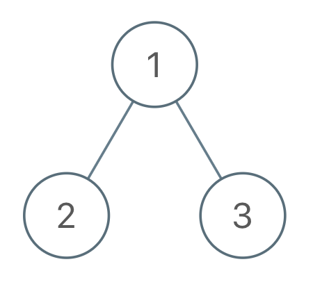

971. Flip Binary Tree To Match Preorder Traversal
Medium
You are given the root of a binary tree with n nodes, where each node is uniquely assigned a value from 1 to n. You are also given a sequence of n values voyage, which is the desired pre-order traversal of the binary tree.
Any node in the binary tree can be flipped by swapping its left and right subtrees. For example, flipping node 1 will have the following effect:

Flip the smallest number of nodes so that the pre-order traversal of the tree matches voyage.
Return a list of the values of all flipped nodes. You may return the answer in any order. If it is impossible to flip the nodes in the tree to make the pre-order traversal match voyage, return the list [-1].
Example 1:

Input: root = [1,2], voyage = [2,1] Output: [-1] Explanation: It is impossible to flip the nodes such that the pre-order traversal matches voyage.
Example 2:
Input: root = [1,2,3], voyage = [1,3,2] Output: [1] Explanation: Flipping node 1 swaps nodes 2 and 3, so the pre-order traversal matches voyage.
Example 3:
Input: root = [1,2,3], voyage = [1,2,3] Output: [] Explanation: The tree's pre-order traversal already matches voyage, so no nodes need to be flipped.
Constraints:
- The number of nodes in the tree is
n. n == voyage.length1 <= n <= 1001 <= Node.val, voyage[i] <= n- All the values in the tree are unique.
- All the values in
voyageare unique.